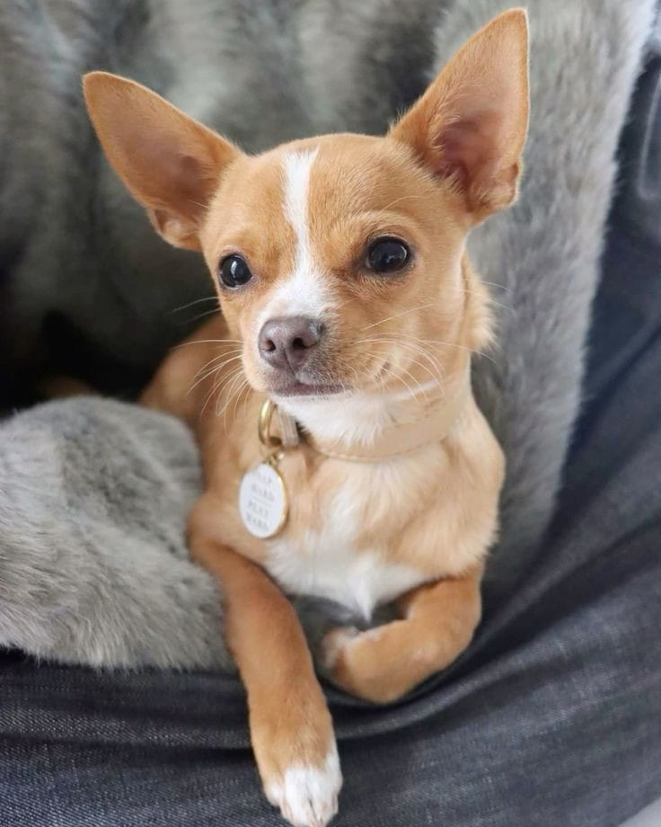

𝓡𝓮𝓬𝓮́𝓶 𝓒𝓱𝓮𝓰𝓪𝓭𝓸𝓼!

𝑵𝒐𝒎𝒆: 𝑷𝒓𝒊𝒏𝒄𝒆𝒔𝒂 - 𝑰𝒅𝒂𝒅𝒆: 4 𝒂𝒏𝒐𝒔
𝑨𝒏𝒕𝒊𝒈𝒂 𝒅𝒐𝒏𝒂 𝒇𝒂𝒍𝒆𝒄𝒊𝒅𝒂, 𝒎𝒖𝒊𝒕𝒐 𝒆𝒔𝒑𝒆𝒓𝒕𝒂 𝒆 𝒄𝒐𝒎𝒑𝒂𝒏𝒉𝒆𝒊𝒓𝒂, 𝒔𝒆 𝒅𝒂 𝒃𝒆𝒎 𝒄𝒐𝒎 𝒄𝒓𝒊𝒂𝒏𝒄̧𝒂𝒔 𝒆 𝒐𝒖𝒕𝒓𝒐𝒔 𝒂𝒏𝒊𝒎𝒂𝒊𝒔, 𝒔𝒆𝒎𝒑𝒓𝒆 𝒂𝒏𝒊𝒎𝒂𝒅𝒂 𝒆 𝒄𝒐𝒏𝒕𝒂𝒈𝒊𝒂𝒏𝒅𝒐 𝒔𝒖𝒂 𝒂𝒍𝒆𝒈𝒓𝒊𝒂!

𝑵𝒐𝒎𝒆: 𝑪𝒂𝒕𝒂𝒓𝒊𝒏𝒂 - 𝑰𝒅𝒂𝒅𝒆: 5 𝒂𝒏𝒐𝒔
𝑫𝒐𝒂𝒅𝒂 𝒅𝒆𝒗𝒊𝒅𝒐 𝒂 𝒎𝒖𝒅𝒂𝒏𝒄̧𝒂𝒔, 𝒆𝒍𝒂 𝒆́ 𝒄𝒂𝒍𝒎𝒂 𝒆 𝒄𝒐𝒎𝒑𝒐𝒓𝒕𝒂𝒅𝒂, 𝒊𝒏𝒕𝒆𝒍𝒊𝒈𝒆𝒏𝒕𝒆 𝒆 𝒂𝒑𝒓𝒆𝒏𝒅𝒆 𝒓𝒂𝒑𝒊𝒅𝒐, 𝒎𝒖𝒊𝒕𝒐 𝒄𝒐𝒎𝒑𝒂𝒏𝒉𝒆𝒊𝒓𝒂
𝑵𝒐𝒎𝒆: 𝑫𝒂𝒎𝒂 - 𝑰𝒅𝒂𝒅𝒆: 3 𝒎𝒆𝒔𝒆𝒔
𝑭𝒐𝒊 𝒂𝒃𝒂𝒏𝒅𝒐𝒏𝒂𝒅𝒂 𝒒𝒖𝒂𝒏𝒅𝒐 𝒇𝒊𝒍𝒉𝒐𝒕𝒆 𝒆 𝒑𝒓𝒐𝒄𝒖𝒓𝒂 𝒖𝒎 𝒍𝒂𝒓! 𝑺𝒆 𝒅𝒂 𝒃𝒆𝒎 𝒄𝒐𝒎 𝒄𝒓𝒊𝒂𝒏𝒄̧𝒂𝒔, 𝒍𝒂𝒕𝒆 𝒑𝒐𝒖𝒄𝒐, 𝒔𝒆𝒎𝒑𝒓𝒆 𝒄𝒂𝒍𝒎𝒂 𝒆 𝒎𝒖𝒊𝒕𝒐 𝒄𝒐𝒎𝒑𝒐𝒓𝒕𝒂𝒅𝒂!

𝑵𝒐𝒎𝒆: 𝑷𝒆́𝒓𝒐𝒍𝒂 - 𝑰𝒅𝒂𝒅𝒆: 1 𝒂𝒏𝒐
𝑨𝒏𝒕𝒊𝒈𝒐 𝒅𝒐𝒏𝒐 𝒅𝒐𝒐𝒖 𝒑𝒐𝒊𝒔 𝒊𝒓𝒊𝒂 𝒔𝒆 𝒎𝒖𝒅𝒂𝒓, 𝒆𝒍𝒂 𝒔𝒆 𝒅𝒂 𝒃𝒆𝒎 𝒄𝒐𝒎 𝒐𝒖𝒕𝒓𝒐𝒔 𝒂𝒏𝒊𝒎𝒂𝒊𝒔 𝒆 𝒆́ 𝒎𝒂𝒊𝒔 𝒊𝒏𝒅𝒆𝒑𝒆𝒏𝒅𝒆𝒏𝒕𝒆, 𝒖𝒎 𝒑𝒐𝒖𝒄𝒐 𝒂𝒈𝒊𝒕𝒂𝒅𝒂 𝒑𝒐𝒓𝒆́𝒎 𝒄𝒐𝒎𝒑𝒐𝒓𝒕𝒂𝒅𝒂.

𝑵𝒐𝒎𝒆: 𝑹𝒂𝒑𝒉 - 𝑰𝒅𝒂𝒅𝒆: 3 𝒎𝒆𝒔𝒆𝒔
𝑬𝒏𝒄𝒐𝒏𝒕𝒓𝒂𝒅𝒐 𝒆𝒎 𝒖𝒎𝒂 𝒄𝒂𝒊𝒙𝒂 𝒂𝒊𝒏𝒅𝒂 𝒒𝒖𝒂𝒏𝒅𝒐.𝒇𝒊𝒍𝒉𝒐𝒕𝒆, 𝒎𝒖𝒊𝒕𝒐 𝒄𝒖𝒓𝒊𝒐𝒔𝒐 𝒆 𝒂𝒏𝒊𝒎𝒂𝒅𝒐, 𝒔𝒆 𝒅𝒂 𝒃𝒆𝒎 𝒄𝒐𝒎 𝒄𝒓𝒊𝒂𝒏𝒄̧𝒂𝒔 𝒆 𝒔𝒆 𝒄𝒐𝒎𝒑𝒐𝒓𝒕𝒂 𝒆𝒎 𝒆𝒔𝒑𝒂𝒄̧𝒐𝒔 𝒑𝒆𝒒𝒖𝒆𝒏𝒐𝒔.